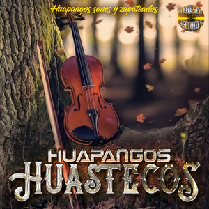
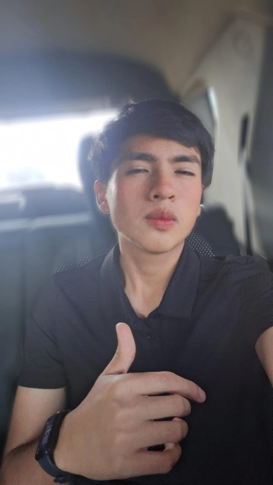
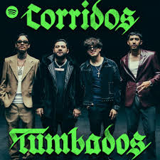

Areli Neri

Huapango Huasteco
Descripción: El Huapango Huasteco es una expresión musical llena de tradición de la región Huasteca. Se distingue por el virtuosismo del violín y el zapateado rítmico, reflejando la identidad cultural de Tamaulipas.
| # | Trío | Canción | Año |
|---|---|---|---|
| 1 | Trío Aurora Hidalguense | La Rosa | 2022 |
| 2 | Trío Mujeres Tamaulipecas | Bendición Huasteca | 2025 |
| 3 | Trío Mujeres Tamaulipecas | La Perla Tamaulipeca | 2025 |
| 4 | Trío Los Hidalguenses | El Rey de la Huasteca | 2019 |
| 5 | Los Malagueña | Flores Negras | 2023 |

Erick Urbano

Corridos Tumbados
Descripción: Los Corridos Tumbados son un subgénero moderno de la música regional mexicana que mezcla el sonido tradicional de los corridos con influencias del trap y hip-hop, muy popular entre la juventud actual.
| # | Artista | Canción | Año |
|---|---|---|---|
| 1 | Natanael Cano | Amor Tumbado | 2019 |
| 2 | Junior H | Ella | 2020 |
| 3 | Fuerza Regida | Sigo Chambeando | 2018 |
| 4 | Peso Pluma | Ella Baila Sola | 2023 |
| 5 | Ovi | Vengo de Nada | 2020 |